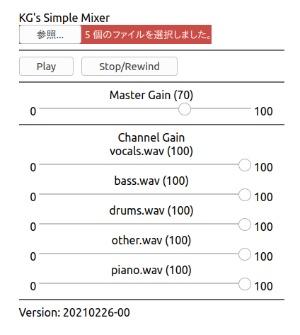

Japanese version
KG's Simple Mixer
Version: 20210308
Tested on
Ubuntu20.04LTS (Linux)
Good Firefox 86.0
Poor Chrome 89.0.4389.82
(some interruption when playing time is updated, export OK)
Windows 10
Edge (Good)
Chrome (Good)
macOS (M1) -- to be tested
Safari
Chrome
Android (ver.7) -- Mobile Chrome (glitchs, export OK)
iPhone6 (iOS 12.5.1) -- Multiple file selection is impossible

How to use
- Prepare audio stem files (separate files for vocal, bass, drums, etc...)
- Single file is fine, of course.
- In any audio file formats which your browser can play.
Typically wav, mp3, aac etc.
- Sample audio (Song written and performed by the author of this page):
Stem files
- start the App by clicking the image (link).
- Open stem audio files of single file and wait until loades.
- Local files or files, or
- files in your cloud drive where your browser can read.
- Adjust mix balance with "Channel Gain".
(Adjust playback volume with Master Gain)
- Play, Pause, Stop, Repeat with Player controls and Speed/Pitch controls.
- Only slowing down (≤ 100 %) works for realtime playback.
- For > 100, use export.
- Export file will be filename mix-utctime.wav.
- Processing time is within 30 seconds (depends on the device used).
- Save the exported file and playback with an audio player.
- Downloading the exported file on Mobile Safari requires special
operation. See the note below
Note on iOS12
My iPhone/iPod Touch (iOS12) requires special operation to store the
exported data.
Blob window pops up and it is possible to save the data
on iCloud Drive.
You want to rename the file with extension".wav",
because the filename will not be set automatically.
The problem of the specification might be solved already
on iOS 13.
Note iOS 13 does not support older devices such as my iPod Touch and iPhone6.
Source code (React, Node.js JavaScript)
https://github.com/goto920/
Contact: goto at kmgoto.jp